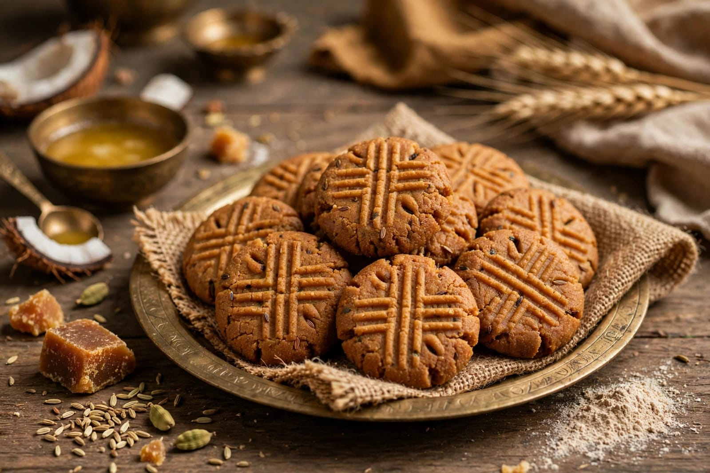

About Chhath Puja
Chhath Puja is a traditional Hindu festival dedicated to the worship of Surya, the Sun God, and Chhathi Maiya. It is mainly celebrated in Bihar, Jharkhand, eastern Uttar Pradesh and some other parts of India. The festival is known for its devotion, discipline and traditional rituals.
The celebration takes place over several days and includes fasting, bathing in holy water and preparing traditional offerings. Devotees visit rivers, ponds and other water bodies to perform prayers. Special importance is given to offering prayers to the setting and rising Sun.
During the festival, devotees prepare offerings such as Thekua, fruits and other traditional foods. Families come together to participate in the rituals and celebrations. Chhath Puja is an important cultural and religious festival that highlights gratitude towards nature and the Sun.
Special Foods

Thekua
A traditional sweet made from wheat flour, jaggery and ghee.

Kheer
A traditional sweet dish prepared with milk and rice.

Rice
Rice is commonly included in traditional festive offerings.